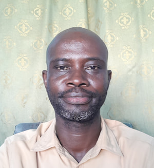

James Emmanuel Addo | WDD 130
Hi! I am James Emmanuel Addo. I’m from Ghana. I enjoy reading and playing of piano. I’m
currently an online student studying Software and Web Development at BYU. I'm very eager
to acquire the skills and expertise needed to design and develop my own software and websites.
I'm excited to learn from others, share knowledge and grow. My goal is to become a proficient
software developer, creating innovative solutions that can positively impact my community and
beyond. I'm looking forward to achieving this aspiration and make a meaningful difference through
technology. I'm also looking forward to collaborating with like-minded individuals and learning
from their experiences."